Kdenlive
Unlike Handbrake or Avidemux, Kdenlive is a full-featured editor
suitable for much more than making clips of video or converting other
videos. This has support for bringing together dozens of clips of video
(in different formats), multiple tracks of audio and video displaying
together and transitioning from one to the other, and rendering
finished video in to many different formats. Throughout this
section we will be doing all these things, and when you're done you'll
be all set to create your own full-featured videos!
Getting Started
When you first open Kdenlive (if someone in that user profile hasn't
done it before you) you will be prompted for a folder where your
project's files will reside. It is important to pick a good folder
here, because when you actually go to save the project, this folder
won't change. All that picking a project save location specifies is where you save the .kdenlive
project file, all the other data still is stored here. But don't
worry if you didn't pick a good one the first time or need to change
it. If you want to change the default location, that can be done in
Settings -> Configure Kdenlive... -> Environment -> Default
Folders in the Project Folder box.
For this specific project, you can change the
location of the Folder containing the files it in Project -> Project Settings
in the Project Folder box. Also in the Project Settings dialogue, we
can select the format we want our final video to be in, in this case
lets choose VGA Widescreen NTSC. This will give us 854x480 (16:9)
resolution, 30000/1001 (or 29.97) frames per second, progressive video.
Also, before we start the editing, lets create and save our project
file. Since we've already got our project in the folder we want, we can
probably just name the project something descriptive and save it there.
In the future we could have other projects that we save here also,
which could share resources (videos, images, audio, etc) with this
project, saving space.
Ok, with that out of the way, lets get started! The first thing you'll
want to do is import some clips. You can get the ones we'll be
using for this project here (samples from Big Buck Bunny, watch the
whole thing here):
Intro.mkv
BunnyPrep.mkv
BunnyRelax.mkv
RedSquirrel.mkv
GraySquirrel.mkv
FlyingSquirrel.mkv
BigBuckBunny-stereo.flac
freestylemix_-_hisboyelroy_-_Revolve.mp3
Download all of those to your hard disk. Then in Kdenlive with
the "Project Tree" visible, click the button just above to Add
Clip. Use this dialog to select each of the files.
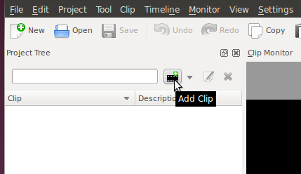
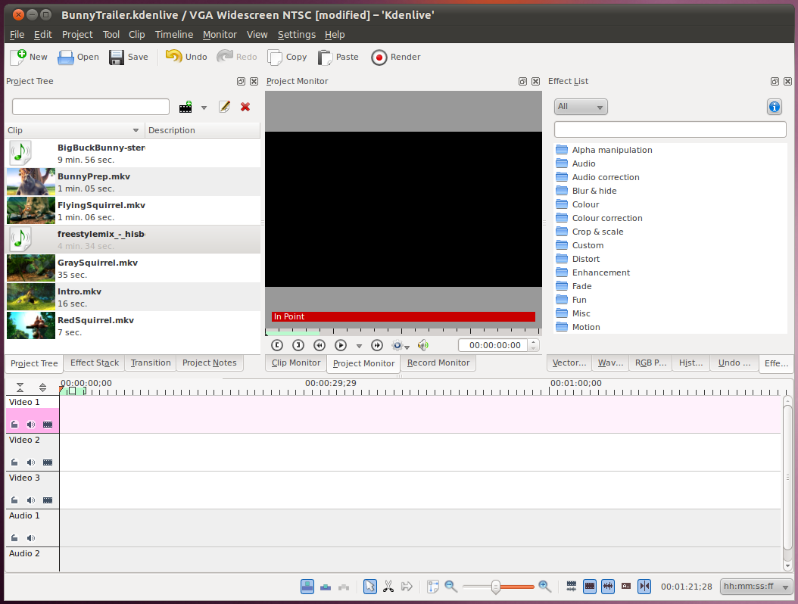
We can create folders within our project to organize all our clips.
Just right click inside the project tree and select Create Folder. Lets
make three and name them Videos, Audio, and Text. Go ahead and
drag the clips into the appropriate folder.
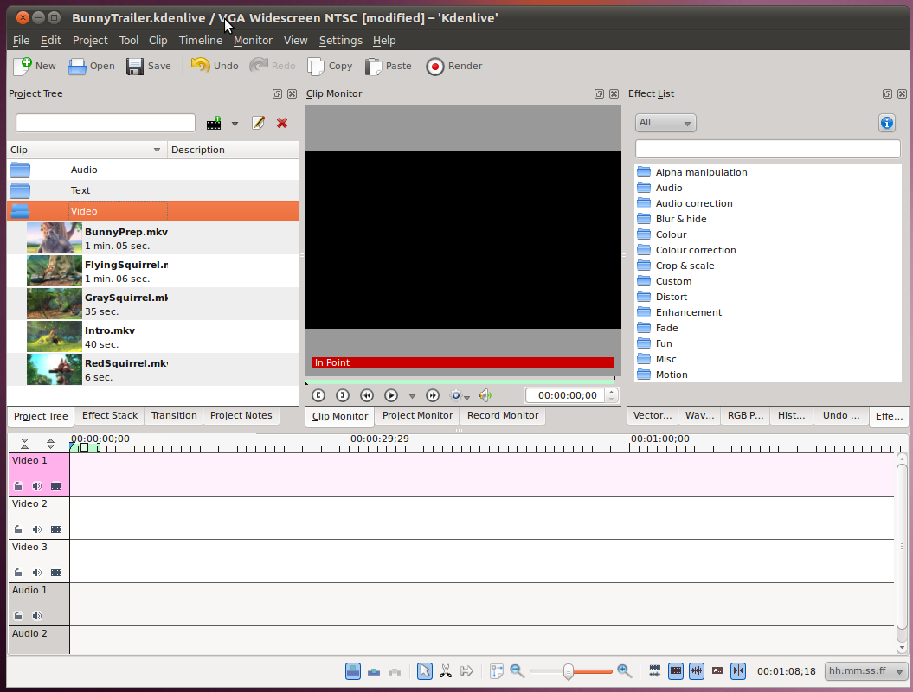
Now we're all set to create our first video. First drag the Intro clip
down into the Video 1 track at the bottom. Then put the BunnyPrep clip
immediately after it in the same track.
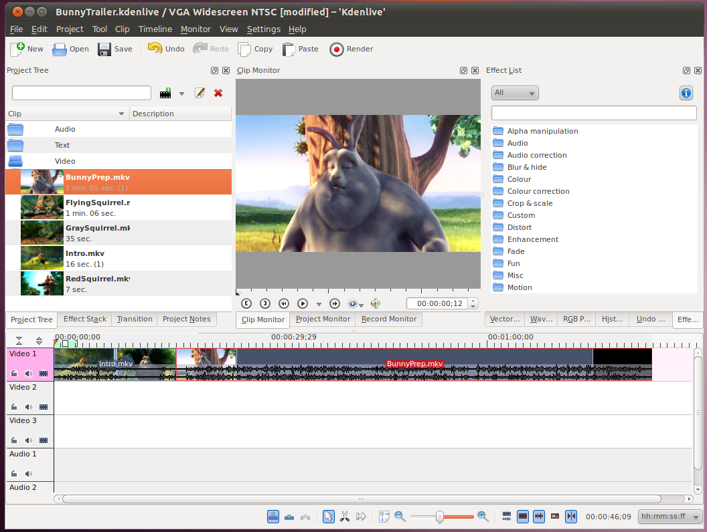
Now that we've got our first cut of a video, we can watch it in the
Project Monitor. Just click the play button.
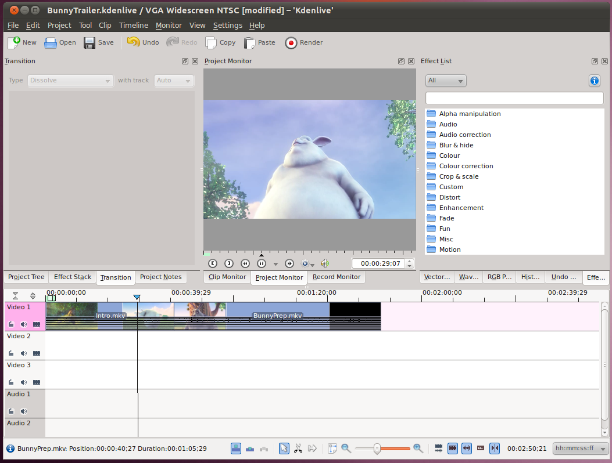
Notice the line (just like in Audacity) that follows the video across
the timeline.
Once we've checked out our video and everything looks good, we need to
"render" it to a file. I'll talk more about what rendering means later,
but for now just know that it takes what you saw in the project monitor
and outputs it to a file format of your choice. Click the Render
button to get started.

In the render dialogue, we're going to select a type of "File
rendering" from the drop-down box. We'll pick a name for our file. I
input "BasicClip.mp4". Then select MPEG-4 from the list of
encoding types, and we'll use the 6000k (only a single pass for now, to
speed things up). When you're all set, hit the "Render to File"
button.
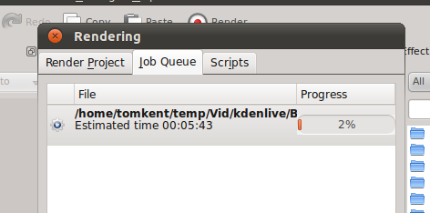
Once the file is done rendering, you can go out to the directory you
saved it in, and open it in a video player to see how it looks.
Picking Clips and Transitions
For this section, lets use a couple of the parts where the Bunny is
preparing for the fight, and put them around the scene from the end
where he's relaxing in the field. (Remove everything else from the timeline.)
To start, in the Project Tree, click on the "BunnyPrep.mkv" clip. This
clip will then show up in the Clip Monitor.
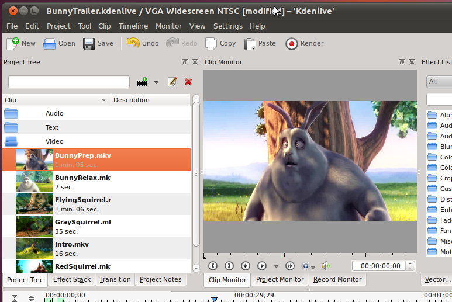
From here you can use the play/pause button along with the forward and
back buttons to view all throughout the clip. Also, like Avidemux there
are two buttons that let you pick a start/end point ("[" and
"]"). Lets use this to create a selection of the scene when the
bunny enters the forest and pulls down the vine. If you have
trouble getting the start and ending just right, you can use the clock
to move one frame back or forward. The clocks format is
"hh:mm:ss;frame" , we need from about 00:00:09;27-00:00:17;03 -- just
over 7 seconds. (In an older version of Kdenlive, that deals with
frames differently, these times are 00:00:08;08-00:00:14;08)
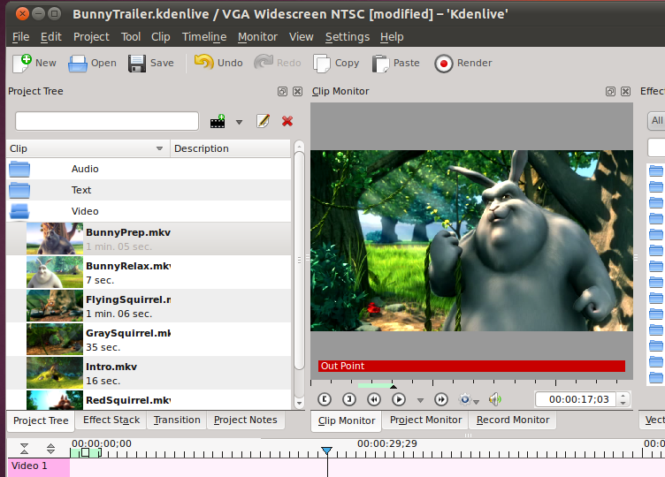
Once you have the selection in the clip monitor, click on the picture in the video and
drag it down to one of the video tracks in the timeline below.
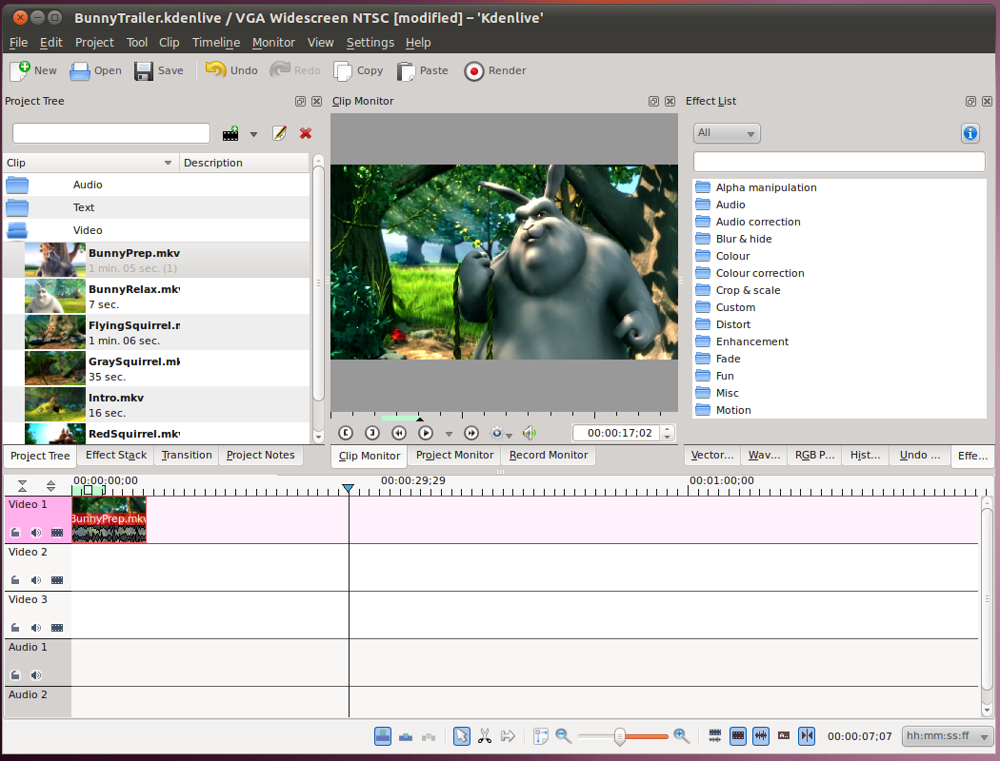
Now lets add a couple more clips to that track of video. Next,
take the entire BunnyRelax.mkv clip and copy it down to the timeline.
For our third clip, lets select another portion from the BunnyPrep.mkv
clip, when he is putting on his face paint
(00:00:47;24-00:00:51;03 or for the older version 00:00:39;25-00:00:42;17). Now we should have all three clips
loaded in the Video 1 track:
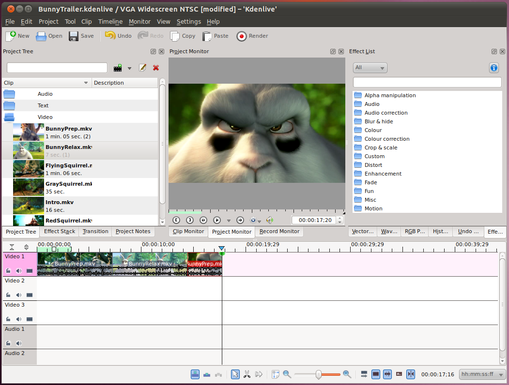
A quick aside - Get to Know the Toolbar
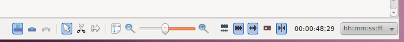
The toolbar is along the bottom of the Kdenlive main window, the buttons from left to right:
Normal Mode - When you put a new clip on a track's timeline, it can
only be put into empty space long enough to fit it.
Overwrite Mode - When you put a clip on a track's timeline, it will
overwrite you put it over.
Insert Mode - When you put a clip on a track's timeline, it will push
the other clips to make room for the new one.
Selection Tool - Normal, you can drag clips around with this.
Razor Tool - Any time you click a video in the timeline, it will split
that video into two pieces at the point you clicked.
Spacer Tool - Moves the clip you click on and all the clips to the
right of it in that track, useful for creating empty space to add a new
clip.
Fit zoom to project - Click this will make the whole project visible in
the timeline.
Zoom Out - See more/further.
Zoom Slider - A quick way to see how close you are zoomed, drag this if
you know how far you want to zoom quickly.
Zoom In - See less/closer.
Split audio and video automatically - When you put a clip of video on
the timeline that has an audio track, this will move the audio to its
own track.
Show video thumbnails - Shows the start and end frame (if there is
room) of each clip.
Show audio thumbnails - Shows the audio waveform in the bottom of the
clip.
Show marker comments - If you put markers into your clips with notes,
this will make them visible.
Snap - When you place a clip on the timeline close to another clip
(possible in a different track) this will move the new one so that it
lines up with the existing one.
Current Location In Timeline - The time or frame number where the
cursor (and Project Monitor) is on the timeline.
Time Format Selector - Use this to convert from the format
hh:mm:ss;frame to the frame number.
So now that we've got all those tools, lets go back to our clips.
If we watch the video we have so far from the start, in the project
monitor (if your project monitor ever doesn't work well, you can always
render the video to a file, possibly at a smaller resolution to go
faster, and watch it in another player), we notice that there is a very
sudden jump at the transition between each of the three clips. A
lot of the time this is the best way to do a transition, that is to
just have it jump from one clip to the next one. When you watch
many television shows: sitcoms, news programs, commercials; they all
have many jumps (sometimes dozens in a minute) from one clip (or camera
angle) to the next. This is perfectly normal, and our eye is used
to making the transition, so it doesn't bother us. Take a minute to go
back and watch the BunnyPrep.mkv clip from the beginning, and count the
number of times that the view changes. (Go now!) Amazing
isn't it? In that short clip (just over a minute long) there were
22 different jumps! The first time we watch that, we may have
only noticed a couple that were major scene changes.
Anyway, getting back to our current clip, transitions that just jump
from one clip to the next are usually fine, but these clips were
especially chosen for this project because they don't easily go
together...the jump between them is just too jarring. Instead, we
need to add a transition effect to make moving between them more
smooth.
We're going to start by overlapping these videos a little bit. To
do this, we'll move the middle video down to track 2, and move it a bit
to the left. Then we'll pull the third clip even more to the left so
they all overlap.
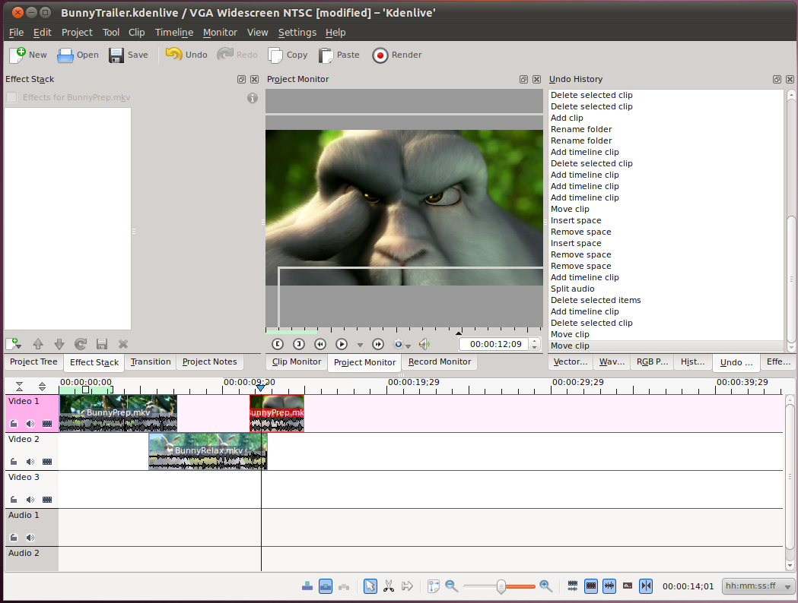
You'll notice if you watch in the project monitor that right now when
there are two clips overlapping, the one from the Video 1 track is the
only one that you can see (it has higher priority).
Now we need to apply the transition between the videos. To do
that, hover your mouse over the bottom right corner of the first clip.
You see a small green triangle show up:
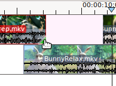
Click on that triangle will automatically create a transition between
the two clips for you. By default it creates the Dissolve
transition, which is usually the only transition you would want to
use. In addition, it brings up the Transition tab for setting the
details of the transition.
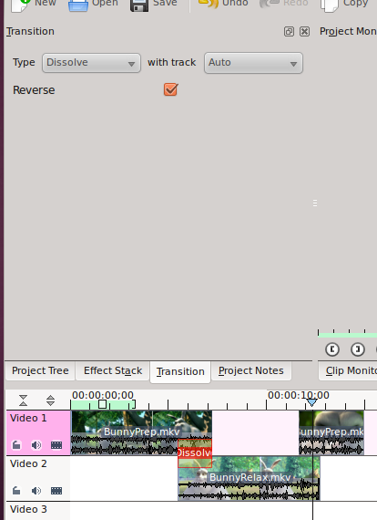
There are two settings for the dissolve transition, which track the
transition applies to (Auto is usually good at guessing, but here we
could manually set it to "2" to be sure) and "Reverse". Usually a
transition will start with a track lower on the timeline, and transition to
the higher track (it doesn't look at which track is overlapping
another track). In this case, however, we have track one playing
and want to transition to track two (transition from a higher to
a lower) so we need to reverse it.
There are many different types of transitions, 95% of which you will
never use. The one that people think is fun to use (but is really bad
for everyone else watching) is the Wipe transition (use
sparingly!). Here you can play with the different ones and
their settings to see what is available.
Next, we want to apply a transition from the second clip to the third
clip. If we hover the lower left corner of the third clip, we will see
the green triangle. Clicking on it will automatically add the dissolve
transition for us. In this case, we're transitioning from track 2 up to
track 1 so there is no need to reverse the order.
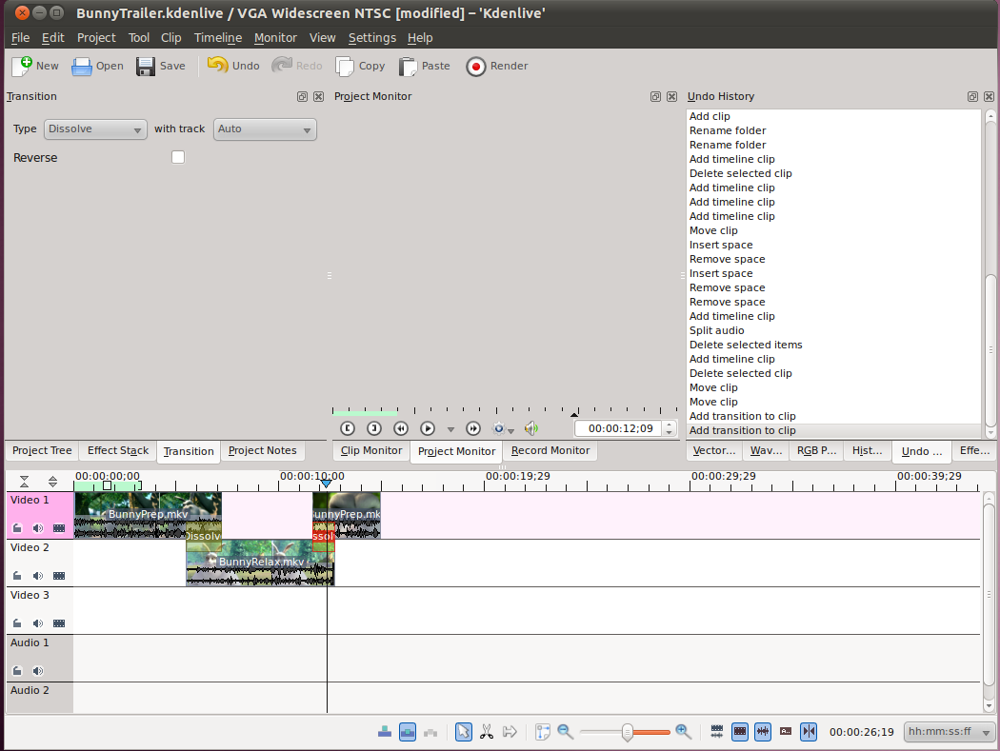
You should now be able to watch the whole video and see the
translations in the project monitor. If you want, you can also
render this file out and see it in a different video player.
Adding Text
To add a Title (or Credits) to our video is easy with kdenlive. Right
click on our Text folder in the Project Tree and select Add Title
Clip. This will bring up a window where you can type in text (or
put photos and graphics).
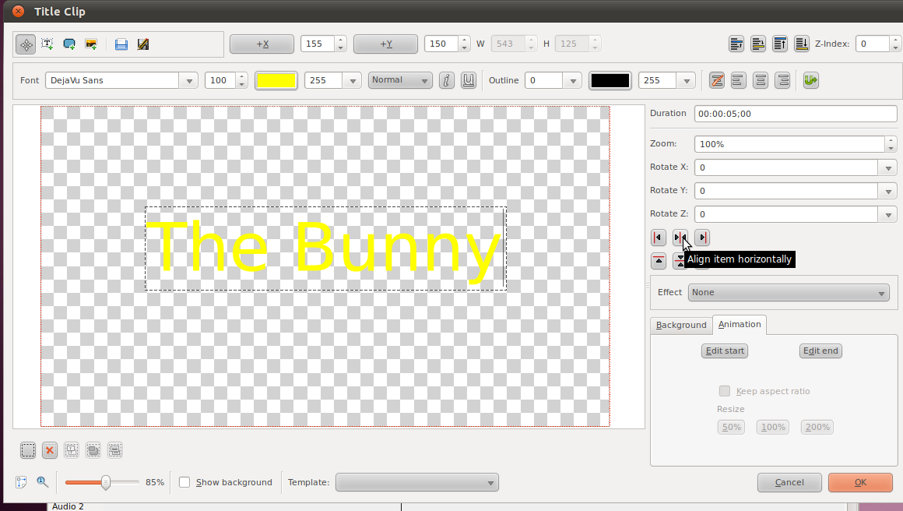
Once you're done, you can change the name in the Project Tree by double
clicking on the existing name.
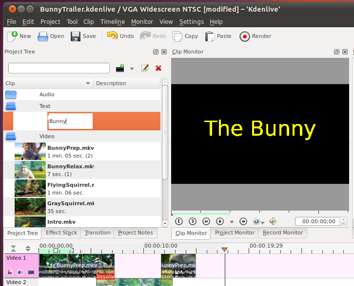
Now we want to add this title to our movie, but first, we should make
some room. Select all the clips that we have (and the Dissolve
transitions) and move it all down a line, so that track 1 is
free. Now we can add our Bunny title to the front. Notice
that it automatically makes a transition of the "Composite" type.
(Composite is a catch-all term for having multiple videos up at once).
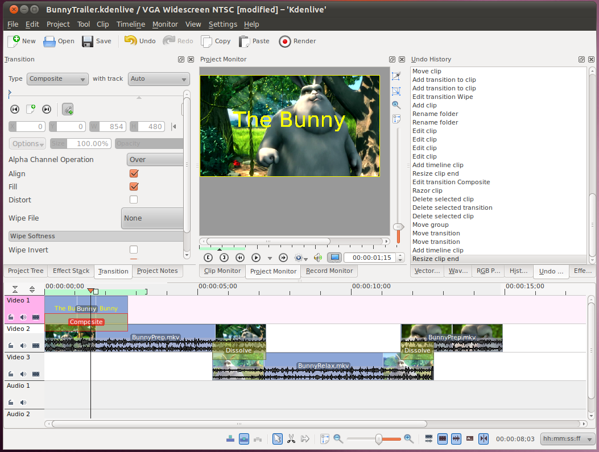
One other thing we can do, is add a transition to the beginning of the
first video clip, so that the video starts out black, and then fades
in. To do that, select the video in the timeline (now in track
2). Then right click on it, and select Add Effect -> Fade -> Fade
from Black (or just Video Effect -> Fade from Black in older versions).
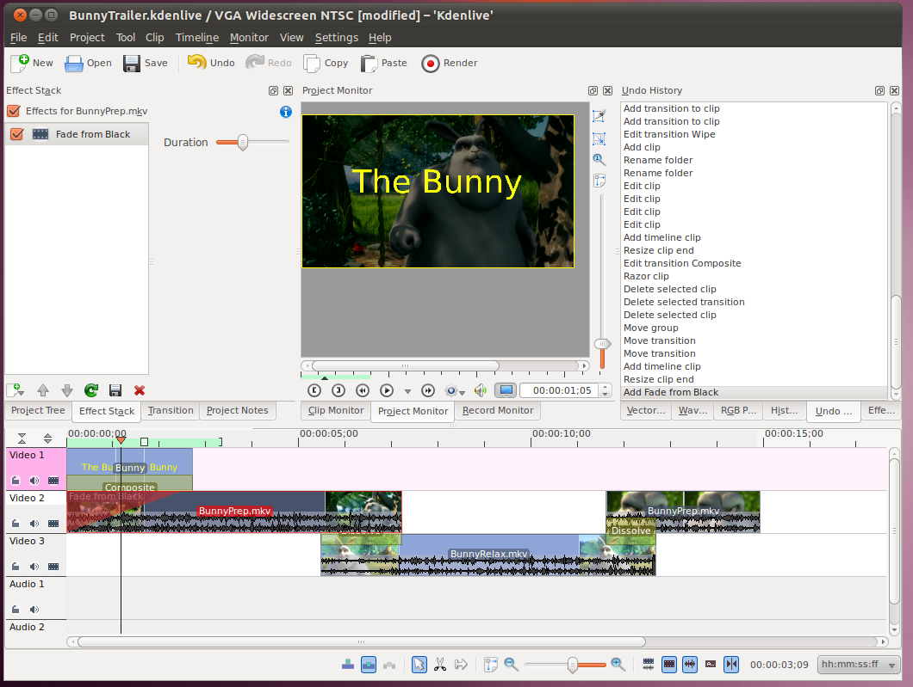
This will put a triangle over the upper right corner of that clip in
the timeline. You can drag this triangle left or right to make the fade
take a shorter or longer amount of time.
We can also make Titles that don't go over video (they just have a
black background, which is the default). For example we can
create a credits & license title to go at the end of the video.
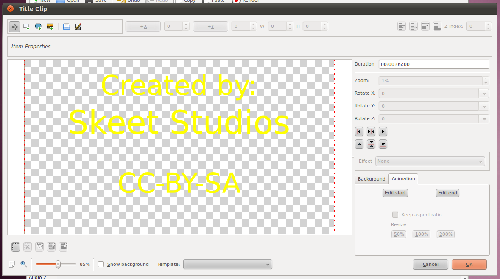
Then just put it in track one after the last video ends.
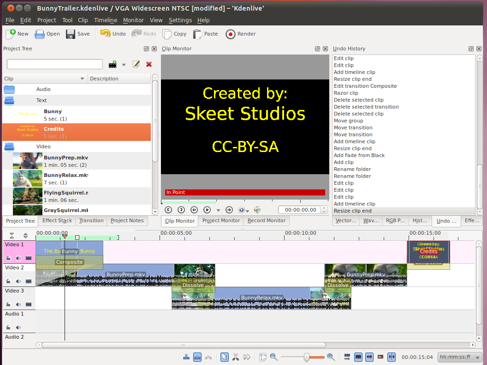
When you're happy with your video at this point, you can go ahead and
render it, and watch it in another video player.
Basic Compositing
Compositing is what is used to have multiple source clips show up in a
single video at the same time. There are lots of different uses for
this. The one we saw in the last section was to overlay text on top of
video. In this section, we'll use the compositing tools in Kdenlive to
have three different videos play in different parts of the screen and insert that into our existing clip video on the timeline.
Before we add anything to our timeline, lets create a new track. Right
click on the Video 3 track and select insert new. We want to put the
new video track after track 3.
Now, lets make a couple more Titles. One that just says "Vs."
and one that says "The Villans". Now we'll move our credits off
to the right in the timeline and add these two new titles in between
our existing video and the credits, the Vs. one should be short, and
"The Villans" one a bit longer.
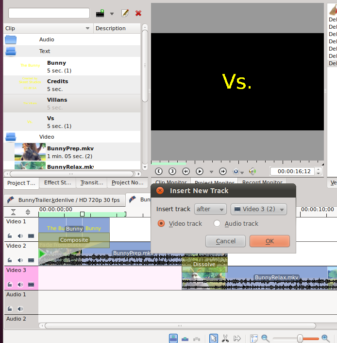
Now go ahead and put the Vs. title into the timeline. When you
put the Villans title in, put it into the new track. You will
need to move the credits out of the way.
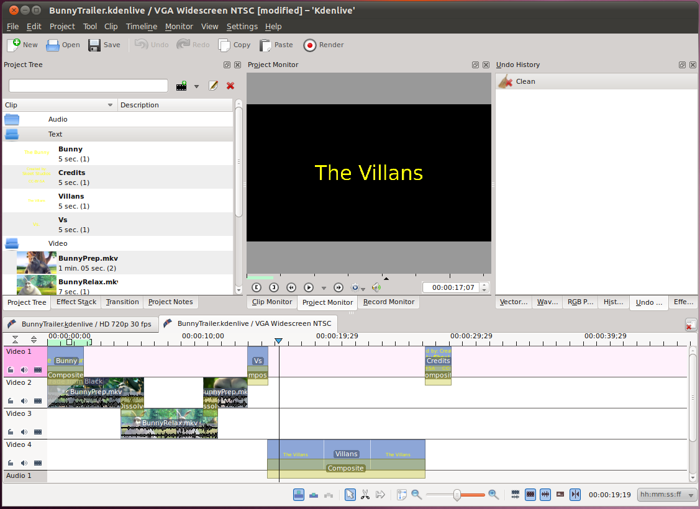
Now that we have our titles setup, lets add the video clips we want to
use. Put FlyingSquirrel.mkv, GraySquirrle.mkv, RedSquirrel.mkv into
tracks 1-3 (in that order). Align them so that they all end right when the credits start.
(You may need to move the credits and stretch the villans to fit
FlyingSquirrel.mkv).
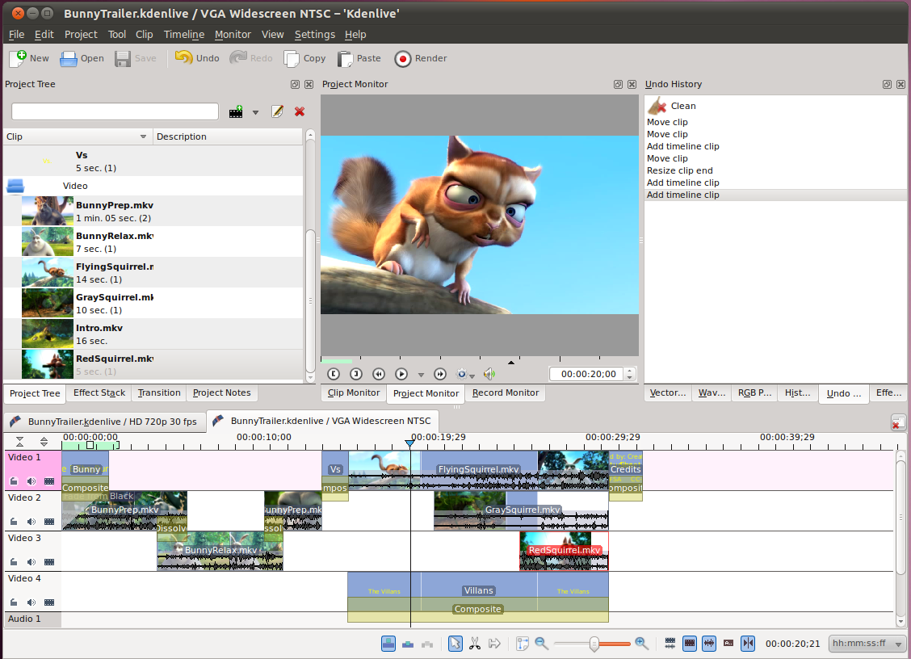
Now we're going to start compositing. Right click on the FlyingSquirrel
clip in the timeline and select Add Transition -> Composite.
Then stretch out the transition so that it covers the entire clip (same
length as the villans clip).
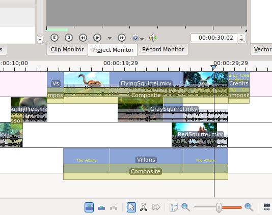
Now (if you click on the composite under the FlyingSquirrel clip) you
will see the transitions tab show up, with the composite settings in
it. This particular composite is for track one, and we will composite
it over track four, so from the "with track" dropdown, select Video 4.
For any composite, it is possible to have several times throughout the
composite where it behaves differently. These are called keyframes (not
to be confused with keyframes created by a codec when encoding video).
Each keyframe specifies what the composite will be doing until the next
keyframe (or the end). In this case, we just want the video to play in
a smaller box the whole time, so we don't need any keyframes except the
one that is automatically created at the start of the composite. To get
to this one, hit the left arrow button just under the timeline in the
composite settings.
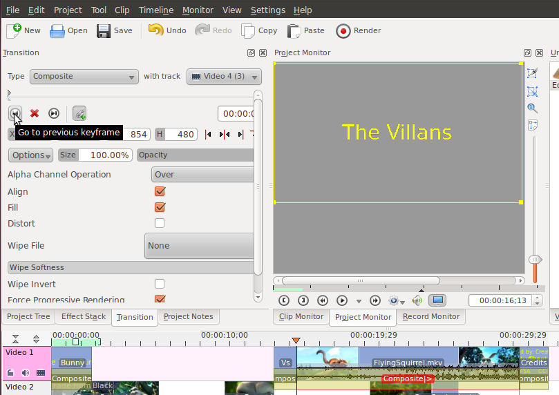
Now we're at the start keyframe, we can start applying our
settings. The first thing we want to do is lower the size from
100% to 30%. You will see that this changed the yellow outline in
the Project Monitor. This yellow outline is where our video will be
put, the red dotted outline is where the video frame is.

Lets move the video to the bottom, just below the text in the
center. We also want to use the button to ensure the our video is
lined up in the center of the frame.
Now we can go and do the same thing for the next two videos, except put
them above the text, to the left and right. (Note the "Y" value
of where you put each clip, and adjust manually so they line up
perfectly).
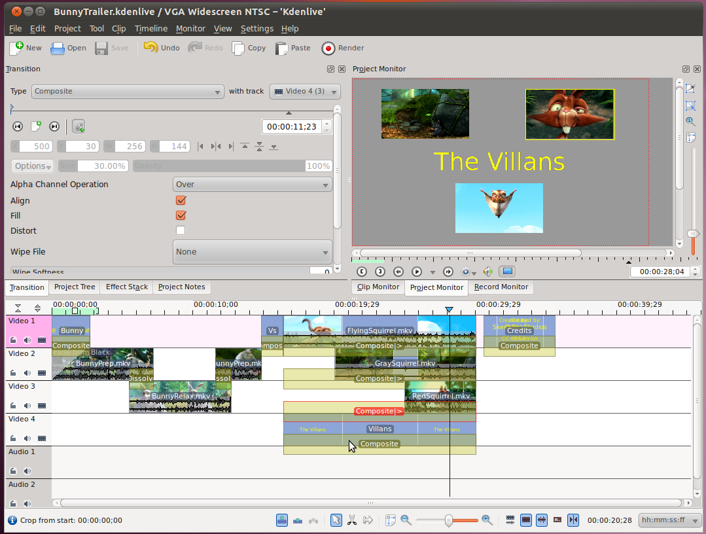
We've got all our video together, and you can view it in the Project
Monitor. The only problem is that our audio is somewhat jumpy. The
reason for this is we are just using the audio that came with each
track, and they don't fit well together (the titles don't even have
audio). What we can do is mute all our tracks (just click the speaker
icon under the label for each track), and just add in our separate
audio track down in Audio 1, and size it to fit. Maybe add a
Effect -> Fade -> Fade In/Out to the audio too.
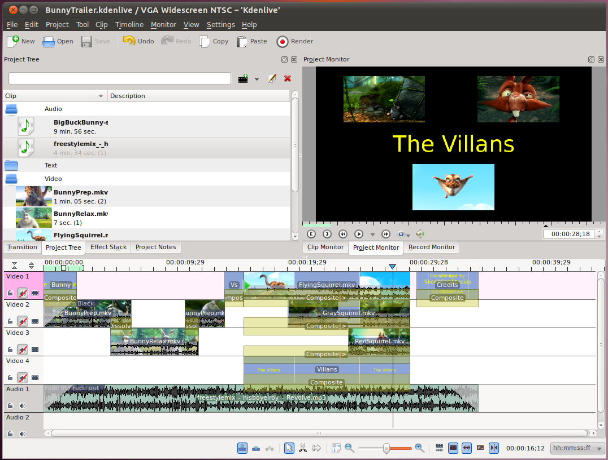
Now we're all finished with our big clip! Go ahead and render it
and watch it in a video player.
Advanced Compositing
Another type of compositing involves making part of a video
transparent, and then putting it over another video. This allows you to
give the subject (in the first video) a background that is different
from where they really are. This is typically called a "Green Screen"
setup, but could also be referred to as "Chroma Keying" or a "Blue
Screen". It is called "Green Screen" because the easiest way to do this
is to have the subject stand in front of a completely green background,
then use the video editing software to remove the color green from the
video.

Here we'll take a clip of a person
in front of a green screen, and put him in front of a background of
some clouds.
First, lets get them loaded into Kdenlive. Then select the portion of
the first clip where he's in front of a green screen (00:00:00;15 -
00:00:05;04) and put that in track Video 1. Then load the cloud clip
in track Video 2, and shorten it down so it is the same length.
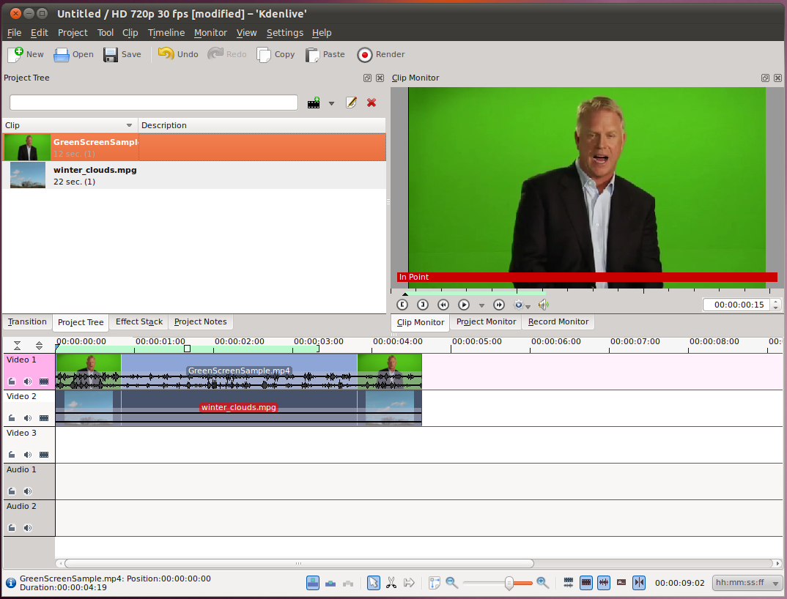
Next, we're going to add an effect to the first track. Right click on
it Add Effect -> Alpha manipulation -> Blue Screen (or Add Video Effect -> Blue Screen in older versions). This will
bring up the blue screen dialogue in the effects tab. On this tab,
there is an eyedropper button that you can use to select the background
color that we want to eliminate. Click it, then select the green color
close to the subject.
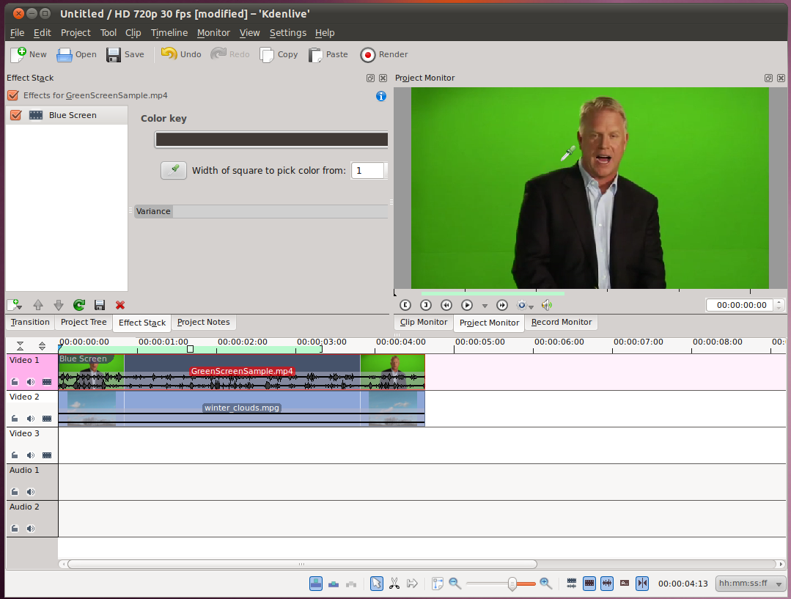
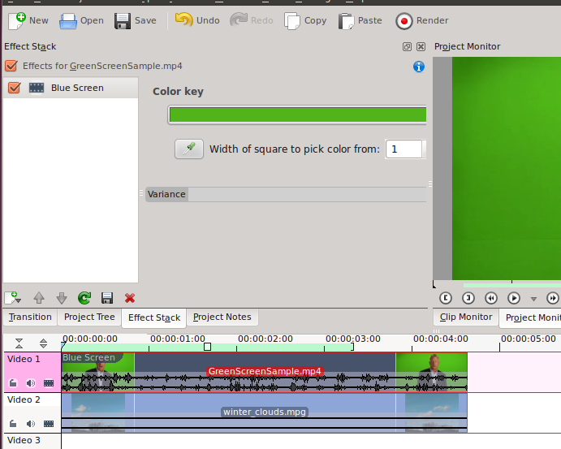
Now we have our key all set to remove the green background from the
first clip. We just need to composite in the second clip. Hover
in the bottom-left corner of the first clip to get a green triangle,
then click it to add a transition. Stretch out the transition to cover
the whole clip, and change it from a Dissolve transition to a
Composite.
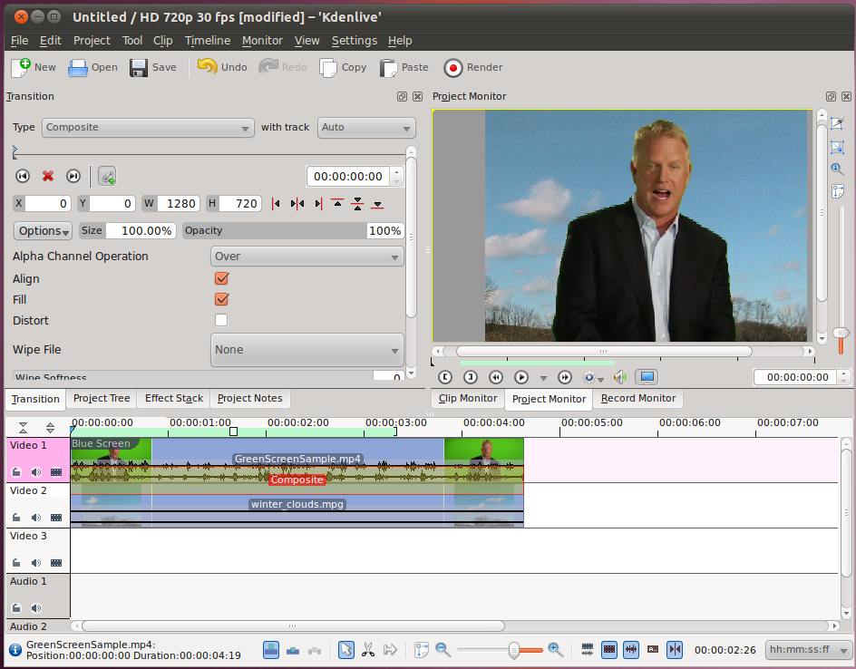
Looking pretty good. All that's left now is a few cleanup things.
First, the background video is 640x480, so if we try to show it at a
bigger resolution than that, it won't look good, so lets set the
project down to that size. Project -> Project Settings ->
Project Profile: VGA NTSC.
Also, the subject is taking up a large portion of the image. While we
have the composite selected, we can resize and/or move his image down a
little so his face is only tow thirds of the way up.
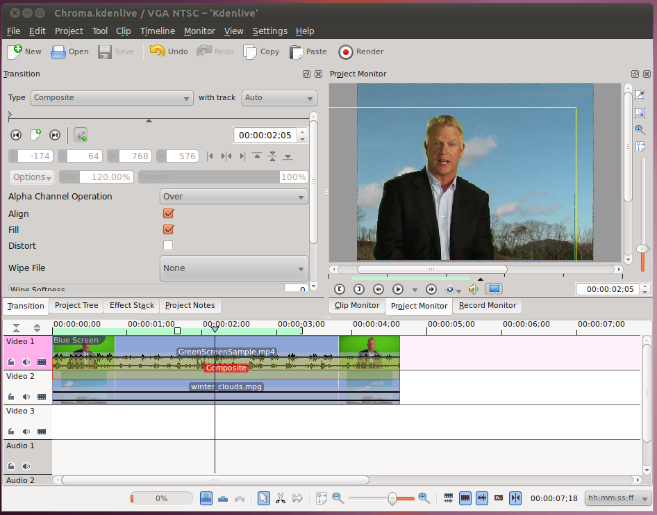
That's all. Go ahead and render it to a file and view it for yourself.
When you view your rendered video, you may notice some minor things.
His shoulders are a bit broken up, there is some green on his face, etc.
These are because this sample of video had a bunch of compression
applied to it after it was recorded. When you do green screen editing,
it is important to get the un-compressed video before it goes through
other processing steps. This will help the keying correctly pick out
the background color (which it didn't do a great job of here).